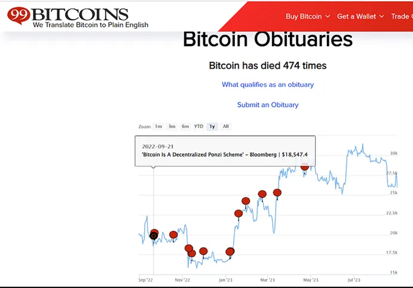
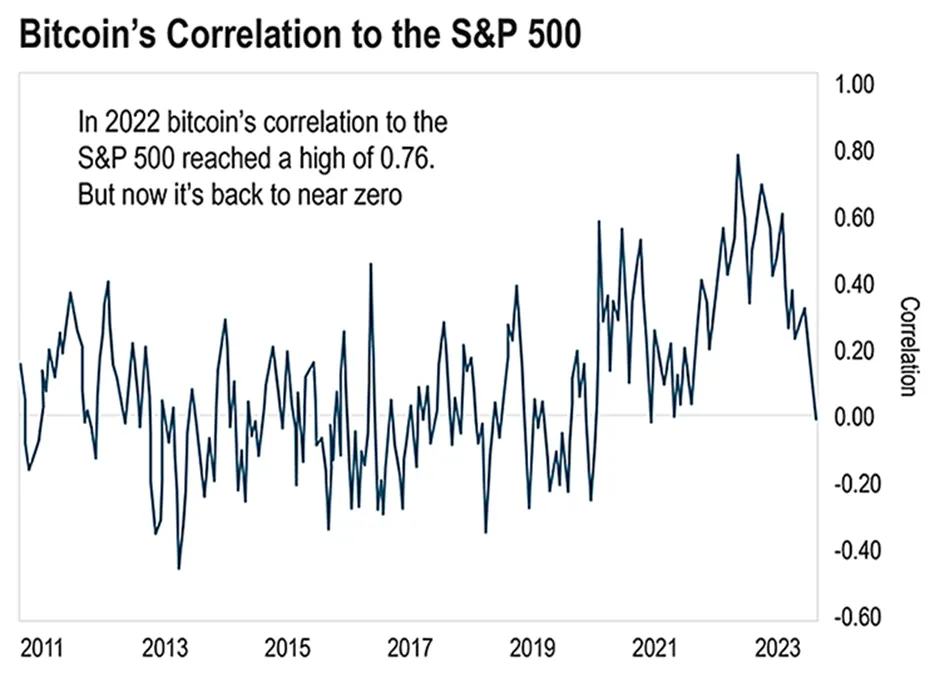
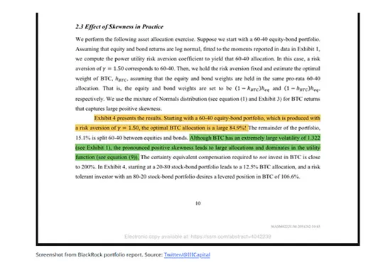
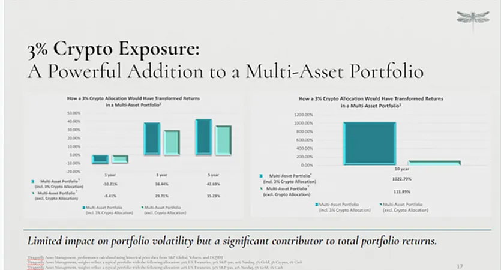
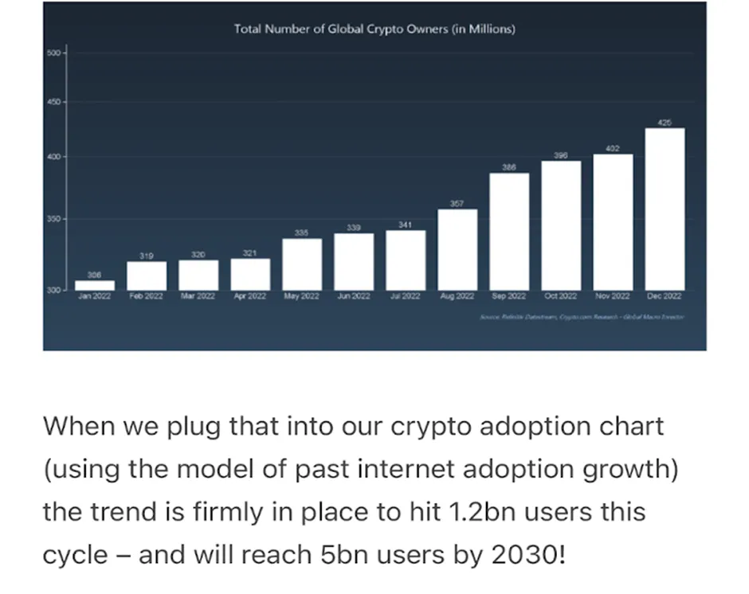
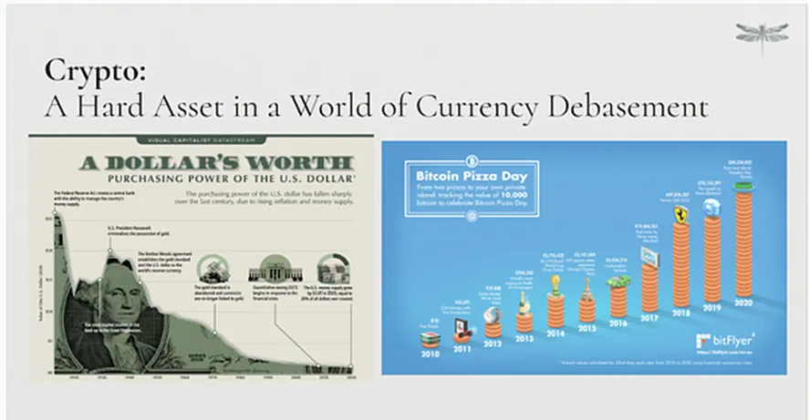

If these two statements make your head spin, I can’t blame you.
The stunning about-face comes from none other than Larry Fink, the founder and CEO of BlackRock, the largest money-management firm in the World. BlackRock boasts nearly $10 trillion in assets under management (AUM). And it’s the largest provider of exchange-traded funds (ETFs), with a 33% market share. Aladdin, its portfolio risk management software, oversees over $21 trillion in assets. Clients include Vanguard and State Street, the Japanese government, and top public companies such as Microsoft, Apple, and Google.
And not only is BlackRock gargantuan in size, but they are also an influential Wall Street player in Washington. For example, Wally Adeyemo, a former chief of staff at BlackRock, now serves as the Deputy Secretary of the U.S. Treasury. And former BlackRock executive Eric Van Nostrand serves as the acting assistant secretary for economic policy for the Treasury. So there’s no doubt BlackRock is a major player in global finance.
Crypto hitherto has had an enormous image problem: there was even a ‘Bitcoin obituaries’ site, which tracked all the articles proclaiming the death of Bitcoin as we know it… in fact there were 15 declarations of Bitcoin’s demise in 2022 alone, according to Bitcoin Obituaries. But now it seems we are seeing the end of the “end of Crypto” chorus! As we emerge from Crypto Winter, the TradFi giants are increasingly getting into the Crypto space. In today’s article I’d like to explore the reasons why.

I believe this is a very significant development. The fact that Tradfi is pivoting their stance on Crypto will usher in a new era of finance as the new world and old world coexist and benefit each other. In fact, we may well look back at this time as a key inflection point for the Crypto industry.
Today, I would like to focus on the reasons why this stunning change of heart regarding Crypto has occurred. I believe it’s because seasoned asset managers like Fink now view Crypto as a “dream investment” for their institutional portfolios.
There’s a number of short-term catalysts that will send Bitcoin (and the overall Crypto market) prices higher in the coming months… including the next Bitcoin halving and the likely approval of a spot Bitcoin ETF.
But there’s one trend that I believe will increase mass adoption over the long term. To understand this trend, we need to think about Bitcoin from the perspective of an institutional investor like Fink. As an asset manager, he wants to generate the highest return possible for BlackRock’s clients while also keeping the risk low. To that end, he’ll look at the correlations between the different asset classes in which BlackRock invests.
Before I get to that, let me explain what’s meant by “correlation” when managing multi-asset portfolios. In finance, correlation measures the degree to which two securities move in relation to each other. The values range from -1 to +1.
That’s why the 60/40 portfolio is popular. It consists of a 60% allocation to stocks and a 40% allocation to bonds as these two asset classes were historically seen as largely moving in opposite directions.
The stock allocation gives you growth potential. The rationale is that in times of healthy economic growth, the allocation to stocks typically produces positive returns for the overall portfolio. But, of course, the stock market can go through drawdowns and also recessions regularly happen. So you balance it out with bonds, which are relatively stable and definitely less volatile compared to stocks, and produce income even in periods of weak economic growth.
Now people well versed in TradFi know that this widely adopted 60/40 “safe” portfolio allocation was disastrous in recent years as the FED tightened policy at its fastest ever rate, crushing bonds and equities at the same time! I believe this experience went some way towards professional asset managers looking for an alternative investment which may be less correlated to mainstream financial assets.
For most of its history, Bitcoin has had little correlation to other risk assets such as the S&P 500. That changed, however, over the course of 2022. At one point Bitcoin’s correlation to the S&P 500 reached a high of 0.76. And some worried the dynamic had changed. That investing in Bitcoin and the blockchain wouldn’t be much different than investing in large-cap tech stocks. Fortunately, this seems like it was just a short-term anomaly.
With the benefit of hindsight, we can attribute the high correlation to the over-leveraged, centralised Crypto firms that blew up during the year like Three Arrows Capital, Celsius, Voyager, and FTX. And now in 2023, as you can see from the chart below, Bitcoin’s correlation to the S&P 500 is back to near zero.

That’s great news. Any rational money manager seeing the correlated movement between their bond and equity portfolio allocations would seriously consider adding exposure to an asset class that was less correlated to these other financial assets….
Bitcoin and altcoins are a new fast growing asset class. The added attraction is the sector has very high historical returns. And it’s not correlated to other risk assets such as stocks. For a portfolio manager, that’s a dream investment. And it’s exactly that thought process that I believe is bringing serious players with gargantuan amounts of capital to deploy into the space, and that likely will take the Crypto markets to new all-time highs.
Again, look no further than BlackRock. It recently put together a report on portfolio optimization and asset allocation with Bitcoin. Covering the last decade, it found the optimal Bitcoin allocation would have been a massive 84.9%!

Now, we don’t expect portfolio managers to rush out and allocate 85% of their portfolios to Bitcoin. But this kind of reasoned in-depth analysis together with the legitimacy that powerful people like Fink becoming Crypto proponents bring to the Crypto sector should open the door to many more portfolio managers considering including Bitcoin in their portfolios.
We at Dragonfly have long been preaching the virtues of allocating even a tiny part of your investment dollars to Crypto. Now even BlackRock is driving a narrative that Bitcoin is a must-have for any portfolio. And as Bitcoin goes, so does the rest of the crypto market. What you can see in the graphic below is the work that my team has done which clearly shows that even a tiny (3%) allocation to Crypto would have transformed the return potential of a conventional multi-asset portfolio (despite the sector’s recent bear market and its sometimes dramatic drawdowns).

In my 25 years of professional investing experience, I have found the following characteristics distinguish my greatest investment picks: you are early in an explosive growth and adoption trend, the key driver to the growth is efficiency gains, and most importantly, there are a variety of macroeconomic scenarios under which the sector continues to thrive.
Zooming in on Crypto, we are certainly early in the adoption trend. As the chart shows, Crypto adoption has continued at breakneck speed even during the long bear market:

Moreover, all the use cases of Crypto I have recently written about share one important characteristic: using blockchain is a cheaper and more efficient way of doing things, just like the existing version of the internet was in its day! This means that use cases are likely to continue to proliferate and therefore so is the exponential growth rate, almost irrespective of what happens to the economy.
Lastly, though Crypto and Bitcoin offer these attractive growth characteristics similar to any early-stage new technology, investing in Bitcoin also protects against the biggest risks that investors face given how indebted governments are being forced to endlessly print money, devaluing their currencies in the process. With limited supply and not controlled by a central authority, Bitcoin’s hard asset status therefore serves to hedge portfolios against the growing risks found within the traditional financial system. This is perfectly summarised in the following chart comparing Bitcoin’s purchasing power to that of the Dollar. In this way, exposure to Bitcoin and Crypto is an “each-way bet” in the sense that it also protects against the growing currency devaluation risks in the financial system.

In summary, it is perhaps not surprising that Tradfi is pivoting towards Crypto. As more traditional finance giants start to embrace Crypto, we’re seeing a marriage of the old and new investment worlds. The quick growth of Crypto, its cost-saving benefits, and its protection against unstable financial times have undeniable allure. A sector that was once seen as just play money is now being viewed as a game-changer in the finance world. Influential players are starting to realise that Crypto offers the “holy grail” in investment terms: high returns that are largely uncorrelated with other financial assets. Witnessing this shift, one can’t help but wonder: are we on the brink of the most transformative era in Crypto as it finally becomes a mainstream investment?
PTLIB is CIO OF Dragonfly Asset Management.
DISCLAIMER: This content is for EDUCATIONAL AND ENTERTAINMENT PURPOSES ONLY and nothing contained in this blog should be construed as investment advice. Any reference to an investment’s past or potential performance is not, and should not be construed as, a recommendation or as a guarantee of any specific outcome or profit.